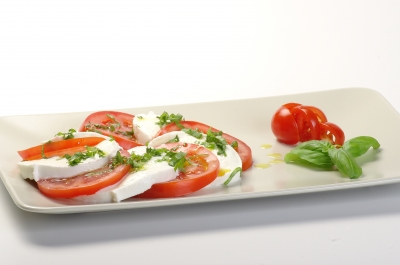
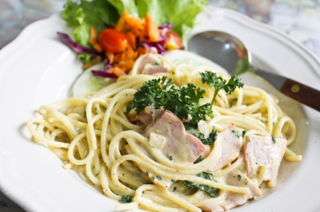
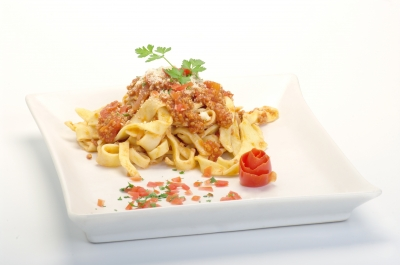
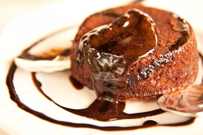
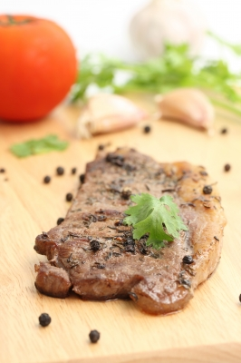
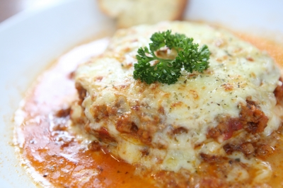

Featuring responsibly sourced ingredients from many local farms including heritage breeds of pig, steer, and lamb, year-round fresh produce, plus house-made pasta, bread & fresh cheeses, and a wine list of over two-hundred carefully curated selections.
     